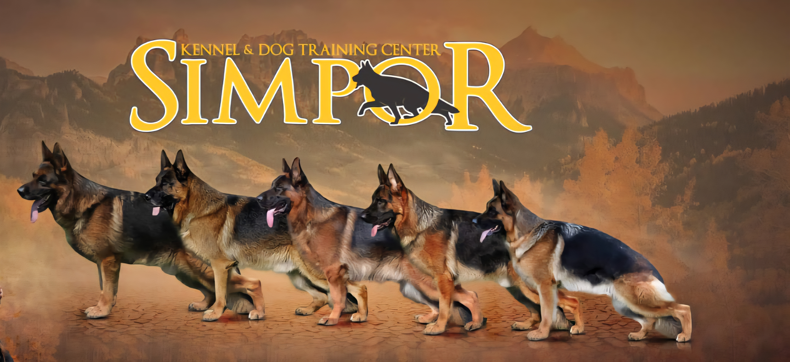
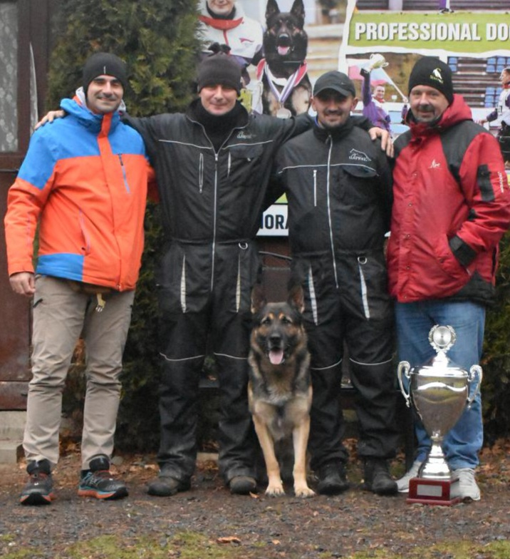
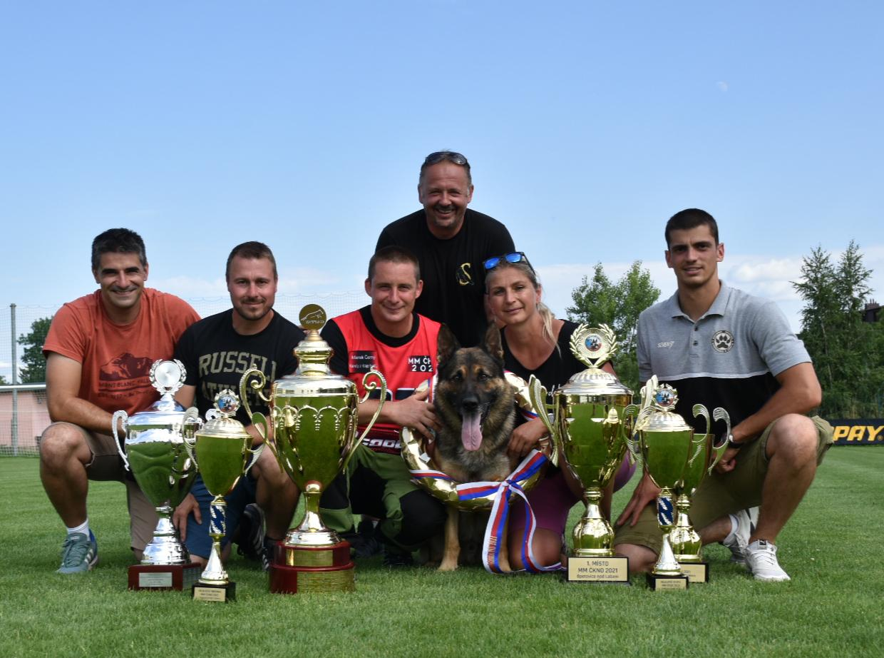

VON SIMPOR
Kennel & Dog Training Center · FCI 3428

Distinctive bloodlines built over 30 years — known worldwide for outstanding results.

The Von Simpor Kennel
The Von Simpor kennel, founded by Dejan Simović, has spent over three decades building one of the most respected German Shepherd bloodlines in international cynology. Selection is based on three non-negotiable pillars: stable temperament, exceptional working drives, and correct anatomy.
Dogs from Von Simpor have placed in the World Top 10 more than 20 times, won at Crufts — the world's most prestigious show — claimed the Czech National Working Championship, and represented our breeding program on every continent. Every breeding decision is made with the long-term quality of the breed as the primary goal.
We work exclusively with KKL-certified breeding stock and follow all international FCI regulations for breeding, selection, and testing. Our dogs are exported and recognized in Germany, South Korea, China, Mongolia, Portugal, Sweden, the USA, and across South America.
Von Simpor Dogs





Awards & Achievements
The Von Simpor kennel's trophy cabinet represents one of the most remarkable collections in the history of Serbian cynology. Victories span national championships, international shows, working trials, and the World Championship stage — across five continents and dozens of countries.
Every trophy reflects not just a win, but the correct work of years: the right genetics, the right training, the right selection. Behind each result stands a philosophy — that great dogs are not made by chance, but by discipline, knowledge, and an uncompromising standard.
What the Kennel Offers
Von Simpor litters produced from carefully selected, KKL-certified parents. Every puppy is health tested, temperament evaluated, and properly documented.
Expert evaluation of dogs for breeding suitability, working ability, and sport potential. Temperament testing and drive assessment by certified professionals.
Worldwide import and export of Von Simpor dogs and selected bloodlines. Full documentation, health certificates, and logistics support for international clients.
Full preparation for KKL breeding licenses and ZTP breed suitability tests. Training, documentation, and support from initial evaluation to final certification.
"I was fascinated by its beauty, anatomy, and exceptional working abilities — the German Shepherd has been my greatest passion from the very beginning."
Contact us about available puppies, adult dogs, breeding consultations, or import and export.
Contact the Kennel